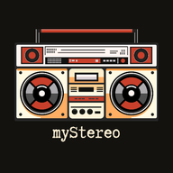
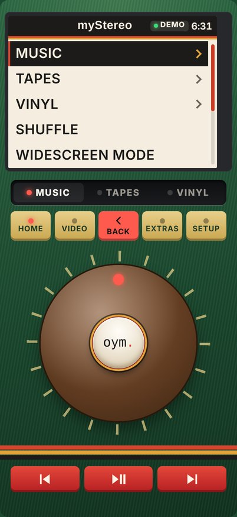

A music player with a real knob, for the songs you actually own. Five minutes gets you from nothing to music playing with no signal at all.
Quick Start · myStereo 1.25

Vinyl. Press VINYL and choose Put on a Record. A whole album, a side at a time. Flip it when the side ends.
Turn it sideways. Widescreen Mode, made for mirroring to a TV.
Shuffle. Right on the main menu, for when you can’t decide.
Make it yours. SETUP › Look changes the player, the screen and the text size.
Sleep Timer. EXTRAS › Sleep Timer. There are games in there too.
AirPlay and Bluetooth. Main menu › Play On.
Your own server, or a seat on a friend’s.
Away from home and Plex won’t answer? myStereo looks for another way in on its own. If it still can’t, check that the server is on and Remote Access is turned on in Plex.
Something broke, gave you an idea or made you smile? Main menu › Alpha › Notes for BC. Alpha › Testing › What to Test lists what he most wants to hear about.
No mail app? bc@runawayanchor.com
It’s an alpha. Things will break.
Phones only start sound after a tap. If the first play is silent, press it again.
Use the Home Screen app, not a private Safari tab. Private tabs forget everything when you close them.
Songs you add live only on that phone. Keep your own copies of the files. Settings › Back Up Everything saves your tapes, settings and a list of those songs, so do it now and then.
A song won’t add? If it’s in iCloud Drive, open it once in Files so it downloads, then try again.
The full User’s Guide is in Settings › Help & About.
What are you putting on first?
myStereo · an Own Your Media Club project · mystereo.ownyourmedia.club